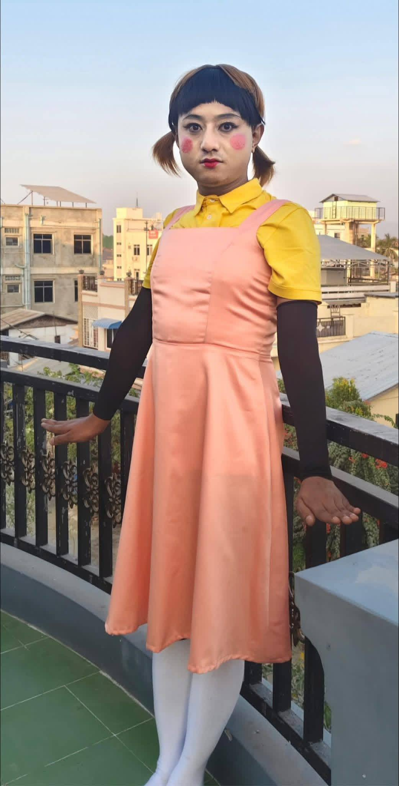

|
 |
English Name | Aung Ye Kyaw |
| Burma Name | အောင်ရဲကျော် (ခ) ရဲရဲ | |
| Born | 14 January 1996 (age 30) Mandalay, Myanmar | |
| Nationality | Burmese | |
| Alma mater | ||
| Occupation | TikTok Cele | |
| Years active | 2022-present | |
| Height | 5'3" | |
| Spouse(s) | No |
Aung Ye Kyaw does not usually share his personal early life or educational background on social media, but rather rose to fame and secured a loyal fanbase during the 2020s through his short comedy videos on TikTok.
Aung Ye Kyaw is a popular Myanmar TikTok creator and influencer who rose to fame in the 2020s through relatable comedy sketches, lifestyle vlogs, and viral trends. He leverages his digital fanbase for commercial brand endorsements and local entertainment appearances.
| Year | Title | Director | Co-Stars | Role |
|---|---|---|---|---|
| 2025 | ကြီးကြီး ကျယ်ကျယ် | Aung Ye Kyaw | Sayarma Mi Naing, Min Htet, Aung Gyi | ဂူဂျွန်ဖြိုး |
| 2025 | စမ်းရေမိုးရဲ့ အကို မြောင်းရေချိုးမဲ့ အောင်ရဲကျော် | Sayarma Mi Naing | Sayarma Mi Naing | Aung Ye Kyaw |
| 2025 | ပြန်ထလာတယိ | Sayarma Mi Naing | Sayarma Mi Naing | Aung Ye Kyaw |